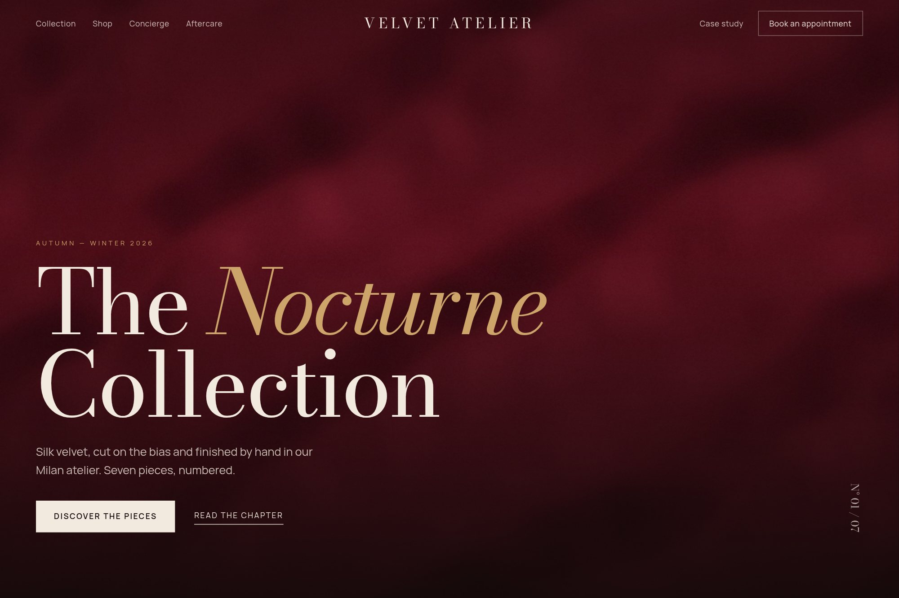

07 — Luxury commerce
A luxury commerce experience blueprint.
The maison journey mapped across editorial, commerce, concierge and aftercare as one system rather than four.

- Type
- Concept · self-directed
- Discipline
- Web · UI · Brand
- Deliverables
- Experience map, modular system, content ops toolkit
- System
- 64 components
01The brief
Luxury retail splits across editorial, commerce, concierge and aftercare, and each part is usually designed by a different team in a different voice.
The blueprint had to make the maison story consistent across channels and formats, and be maintainable by the client’s own content team afterwards.
02Design decisions
- Four experience pillars fixed up front, so the same narrative survives every channel and format.
- Product pages carry concierge prompts rather than opening a second checkout path.
- A modular system with motion tokens and a content ops toolkit, so the client’s team can publish without design support.
03Outcome
A sixty-four-component system covering the full journey — editorial flow, commerce craft, client rituals and aftercare — with personalisation and motion documented as part of the handover.
A concept project designed in-house by Yonder Tech, not a client engagement. Figures describe the delivered design system, not commercial results.